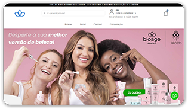
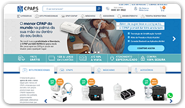

|
|
Aylmer Bolzan |
| Domingos Martins - ES |
| Principal | Quem Sou | Projetos | Contato |
Projetos mais relevantesConfira aqui alguns projetos interessantes que tive a oportunidade de participar recentemente, tendo grande participação em sua execução e que carrego com orgulho em meu portfólio: |
 |
GoldClube.comAgência de marketing de afiliação da região das montanhas capixabas que atua
com produtos cosméticos, principalmente produtos capilares e emagrecedores. |
|
|  |
Bioage Skincare SolutionÀ frente da equipe Comercial e do Marketing, tive a oportunidade de implantar o e-commerce regional da franquia Bioage Vitória em Open Cart, levando a empresa a uma outra maturidade no varejo digital, quando anteriormente trabalhava somente com as redes sociais (Instagram e Facebook) e com representantes porta-a-porta e através de vendas por telefone. |
|
|  |
CPAPS.com.brAtuando como Gerente de E-commerce, tive a oportunidade de, por 4 anos, estar à frente do Marketing do maior e-commerce de equipamentos respiratórios da América Latina, passando inclusive por um momento super peculiar ao negócio, que foi a pandemia do COVID-19, em que o principal tipo de equipamento necessário era comercializado pela empresa. |
|